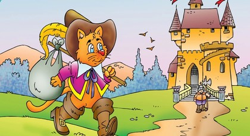

Çizmeli Kedi

Bir zamanlar, üç oğlu olan bir değirmenci varmış. Değirmenci ölünce büyük oğluna değirmen, ortanca oğluna eşek,
küçük oğluna da kedi miras kalmış. Küçük oğlu bu duruma çok üzülmüş.
“Kedi ne işine yarar ki insanın?” diye yakınmış. “Pişirip yiyemezsin bile.” Kedi bunu duymuş ve hemen cevap vermiş.
“Kötü bir mirasa sahip olmadığınızı göreceksiniz efendim. Bana boş bir çuval ve bir çift de çizme verirseniz, neye yarayacağımı görürsünüz.”
Şaşkınlıktan ağzı bir karış açık kalan çocuk, kedinin istediklerini yapmış. Kedi çizmeleri giyince ayna karşısına geçmiş ve kendini pek beğenmiş.
Sonra kilerden taze bir marulla güzel bir havuç seçip ormanın yolunu tutmuş. Ormanda çuvalın ağzını açmış, marulla havucu çuvalın içine yerleştirip
bir ağacın arkasına saklanmış. Çok geçmeden taze sebzelerin kokusunu alan küçük bir tavşan çuvalın yanına gelmiş, zıplayıp içine atlamış.
Kedi saklandığı yerden çıkıp çuvalın ağzını sıkı sıkı bağlamış.
Ancak Çizmeli Kedi tavşanı efendisine götürmek yerine doğruca saraya gidip Kral’la görüşmek istediğini söylemiş. Kral’ın huzuruna çıktığında yere eğilerek,
“Yüce Efendimiz, size Efendim Marki’den bir hediye getirdim,” demiş. Bu hediye Kral’ın çok hoşuna gitmiş.
Üç ay boyunca Çizmeli Kedi saraya o kadar çok hediye götürmüş ki, Kral artık onun yolunu gözler olmuş. Derken Çizmeli Kedi’nin dört gözle beklediği
gün nihayet gelmiş çatmış. “Bana sakın neden diye sormayın ve bu sabah ırmağa gidip yıkanın,” demiş sahibine. Çizmeli Kedi, o sabah Kral’ın Prenses’le,
yani kızıyla birlikte ırmağın kenarından geçeceğini biliyormuş.
O sabah, Kral’ın faytonu ırmağın yakınından geçerken Çizmeli Kedi telaşla yanlarına yaklaşmış. “Yardım edin! Yardım edin!” diye bağırmış.
“Efendim Marki boğuluyor!” Kral hemen bir alay askerini ırmağa yollamış.
Fakat Çizmeli Kedi bununla da kalmamış. Kral’a, efendisi ırmakta yüzerken hırsızların onun elbiselerini çaldıklarını söylemiş.
(Oysa Çizmeli Kedi, efendisinin elbiselerini çalıların arkasına kendisi gizlemiş!) Kral, hiç gecikmeden Marki’ye bir takım elbise yollamış.
Tahmin edeceğiniz gibi Çizmeli Kedi’nin sahibi, kendisine Marki denmesine çok şaşırmış, ama akıllılık edip hiç sesini çıkarmamış.
Marki güzelce giydirildikten sonra Kral onu gideceği yere götürmek için faytonuna davet etmiş ve kızıyla tanıştırmış. Prenses,
iki dirhem bir çekirdek giyinmiş olan Marki’ye bir bakışta âşık olmuş.
O sırada Çizmeli Kedi koşa koşa oradan uzaklaşmış. Çok geçmeden büyük bir tarlada ot biçen insanlara rastlamış. “Beni dinleyin!” diye bağırmış.
“Kral bu yöne doğru geliyor. Size bu tarlaların kime ait olduğunu sorarsa ona efendim Marki’ye ait olduğunu söyleyeceksiniz. Yoksa sizi dilim dilim doğrattırırım!”
Sonra Çizmeli Kedi bir süre daha koşmuş ve büyük bir tarlada buğday biçen adamlara rastlamış. Aynı şeyi onlara da söylemiş.
Sonra tekrar koşmuş ve her rast geldiği insana aynı şeyleri tekrarlamış. Derken Dev’in şatosuna varmış.
Kral’ın Faytonu Çizmeli Kedi’nin geçtiği yerlerden geçerken Kral her rast geldiği insana, “Bu tarlalar kime ait?” diye soruyormuş.
Her defasında da aynı cevabı alıyormuş. Kral, Marki’nin bu kadar çok toprağa sahip olmasına şaşırmış. (Çizmeli Kedi’nin sahibi de öyle!)
O sırada Çizmeil Kedi Dev’in şatosunda başka bir işler çevirmekle meşgulmüş. “Dev,” demiş Çizmeli Kedi, Dev’in nefesinin kokusundan
iğrendiğini gizlemeye çalışarak. “Senin aynı zamanda müthiş bir sihirbazlık gücünün olduğunu söylüyorlar, doğru mu?”
“Öyle diyorlarsa, öyledir,” demiş Dev alçakgönüllülükle.
“Örneğin, istersen hemen bir aslana dönüşebildiğini söylüyorlar,” demiş Çizmeli Kedi. Bunu söyler söylemez Dev hemen kendini bir aslana dönüştürüvermiş.
Çizmeli Kedi kendini dolabın üzerine zor atmış. Dev tekrar eski haline dönünce dolaptan aşağı inmiş. “Mükemmel!” demiş Çizmeli Kedi.
“Ama fare gibi küçük bir şeye dönüşmek senin gibi cüsseli biri için imkânsız olmalı!”
“İmkânsız mı?” diye gülmüş Dev. “Benim yapamadığım şey yoktur!” Dev bir anda fareye dönüşmüş, Çizmeli Kedi de onu hemen yutmuş.
Derken Kral, Dev’in şatosuna varmış. Şatonun artık kime ait olduğunu tahmin etmişsinizdir herhalde! Çizmeli Kedi Kral’ın faytonunu şatonun yolunda karşılamış.
“Bu taraftan gelin,” demiş. “Sizi bir ziyafet bekliyor.” (Dev o gün birkaç arkadaşına bir ziyafet vermeyi planladığı için yemeklerle donatılmış
büyük bir masa hazır bekliyormuş!”)
O gün sonunda Çizmeli Kedi’nin sahibi marki Prenses’le nişanlanmış. Bir hafta sonra da evlenmişler. Çizmeli Kedi’ye ne mi olmuş? Dokuz canından dokuzunu da sefa
içinde sürmüş ve bir daha da fare avlamasına gerek kalmamış - ara sıra avlamış, o da kedi olduğunu unutmamak için